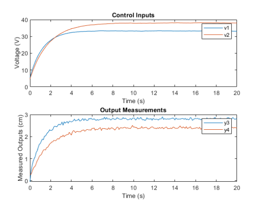

Model-Based Control and State Estimation for Quadruple Tank Process
Developed Kalman and Particle Filters for state estimation and Model Predictive Control (MPC)
algorithms in MATLAB, including both constrained and unconstrained cases

Multi-UAV path planning for urban air mobility
Aimed to design an efficient algorithm that entails the
intricate task of ensuring collision-free paths for multiple
drones operating within the same airspace, all while
minimizing time and cost.

Tethered Aerial Vehicle for Blind Navigation
Aimed to control a tethered aerial vehicle to assist a blind
person by approximating the system as a damped spring-mass
system and implemented human state aware controller.

Inverted Pendulum
Aimed to stabilize the inverted pendulum in an upright
position by implementing PID and LQR controllers and compared
the results from both

Robust QuadCopter Control
Modeled a quadcopter capable of dynamic maneuvers Implemented
PD controller in 2D and 3D for various trajectories Achieved
Minimum snap trajectory for quadrotor given the desired
waypoints

Stylus Controlled Snake Game
Aimed to create a fully fledged snake game controlled by a
stylus Implemented HSV Backprojection for detecting a
dynamically coloured stylus and determining its direction of
movement.

WayFinder
Aimed to address the navigation challenges faced by cyclists
and bikers in a safer manner compared to using mobile phones.
It does not require any custom application as it uses
exisiting voice packs.

Trajectory Estimation using EKF
Implemented an Extended Kalman filter, for estimating the
trajectory of a vehicle using odometry.